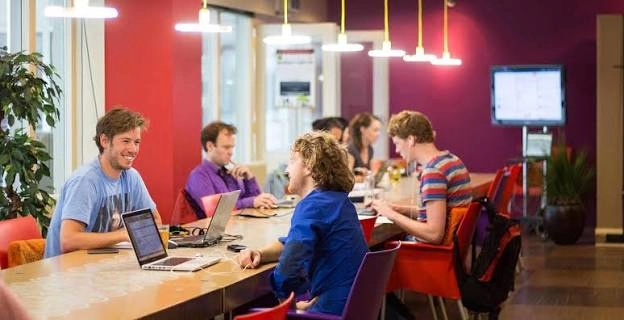
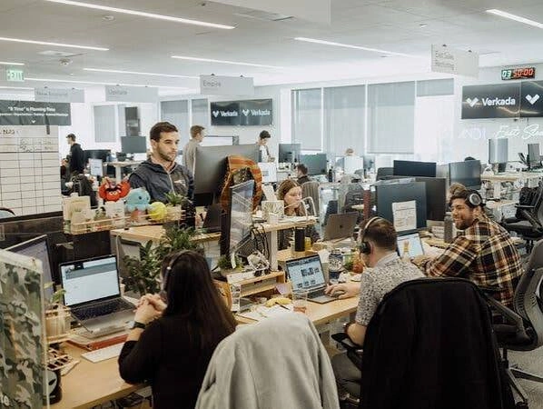
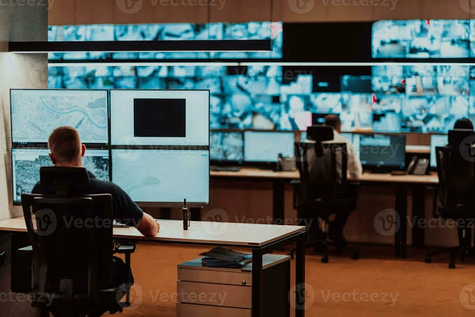

Culture
7 rituals that keep distributed teams close
From virtual coffee breaks to quarterly meetups, these small habits make a big difference.
Practical guides, product news and real stories on async work, great meetings and building a culture that thrives across time zones.
Our editors' pick of the month, packed with ideas you can use on Monday.
Meetings are not the enemy; unclear meetings are. We share the exact framework our own team used: written briefs first, recorded updates second, and live calls only for decisions. The result was fewer calendar invites and faster shipping.
Read full storyHover or tap a card to explore each topic.
Build trust, belonging and rituals when your team never shares an office.
Explore topic
Agendas, recordings and async habits that give everyone their time back.
Explore topic
Data-backed ways to plan sprints, protect focus time and measure what matters.
Explore topic
Filter by category to jump straight to what interests you.
From virtual coffee breaks to quarterly meetups, these small habits make a big difference.
See exactly who is editing what, with comments and mentions built right into the page.
Replace the daily call with recorded updates and keep every release on track.
Ten practical steps, from single sign-on to audit logs, that any company can adopt this week.
A 30-day plan that helps newcomers feel confident, connected and productive.
Plan visually, assign clearly and let Stackly nudge people before deadlines slip.
Thousands of remote-first teams learn from our blog every month.
Practitioners who run remote teams every day.
One short email a month. No spam, just ideas worth your time.
🎉 Thanks for subscribing!
Join 12,000+ readers. Unsubscribe anytime.
Start a free trial and bring chat, video, docs and boards together for your team.